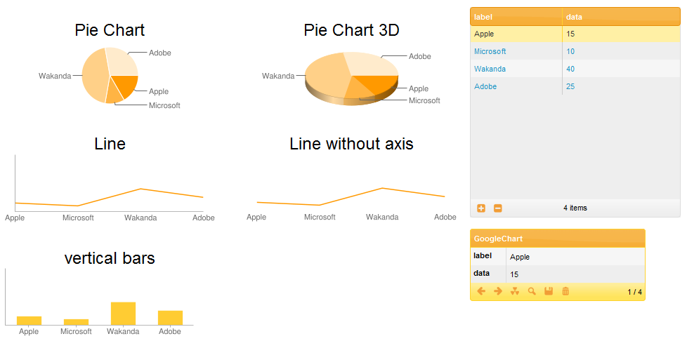
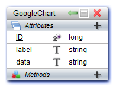
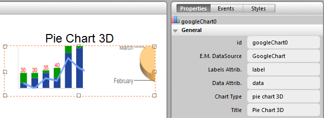
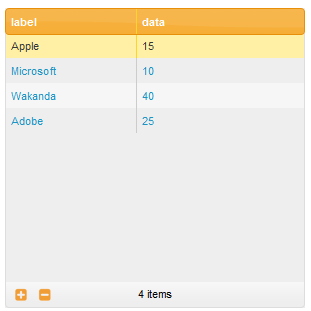
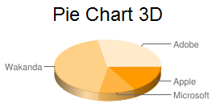

Google Chart Template
 level
level
Easy
Description
This template shows how to create a google Chart Widget binded on a DataSource.
Application Screenshots

Tutorial
- In the Entity Model Editor, create an Entity Model with 2 attributes : one that contains the labels of the chart, the other contains the data

- in the GUI Designer :
- Drag'n Drop the "Google Chart" Widget
- Drag'n Drop the Entity Model DataSource on the Widget or enter the name of the DataSource manually (here : "GoogleChart")
- In the "Labels Attrib." field, enter the name of the attribute that contains the labels of the chart (here : "label")
- In the "Data Attrib." field, enter the name of the attribute that contains the values of the chart (here : "data")
- Select a chart type (here : "pie chart 3D")
- Enter the title of the chart (here : Pie Chart 3D")

- Create a Grid or an Auto Form to create Data
- Launch the server and launch the page that contains the Google Chart

- Enter a few data in the Grid

- The Google Chart widget updates automatically when the DataSource Changes
